はじめに
このギャラリーについて
掲載している図・コード・文章は、すべて AI（Claude Code）が *-diagnostics skills に従って生成したものです。
人手による内容の検証は行っていません。診断図の雰囲気と情報量を眺めるためのもので、
個々の数値や判定の正しさを保証するものではありません。
- 題材は Titanic の
train.csv（891 人）。生存時間分析のみ lifelines 同梱の Rossi 再犯データです。スキルの動作を示すデモで、データについての結論を出すものではありません。
- 図は出力そのままです。基準を満たしている図も、前提が崩れている図も同じように並べています。
- 各手法には診断サマリー（診断項目 / 実測値 / 合格基準 / 判定 / 次アクション）があり、ここにはそこから数項目を抜粋しています。
- OK
合格基準を満たしている。
- 確認
人の判断が要る項目。
- 要対処
基準を外れている。次アクションがつく。
絞り込み
①
統計的推論
statistical-inference-diagnostics
回帰・検定・生存時間・ベイズ。全 6 手法。
01
線形回帰（OLS）
references/ols.md
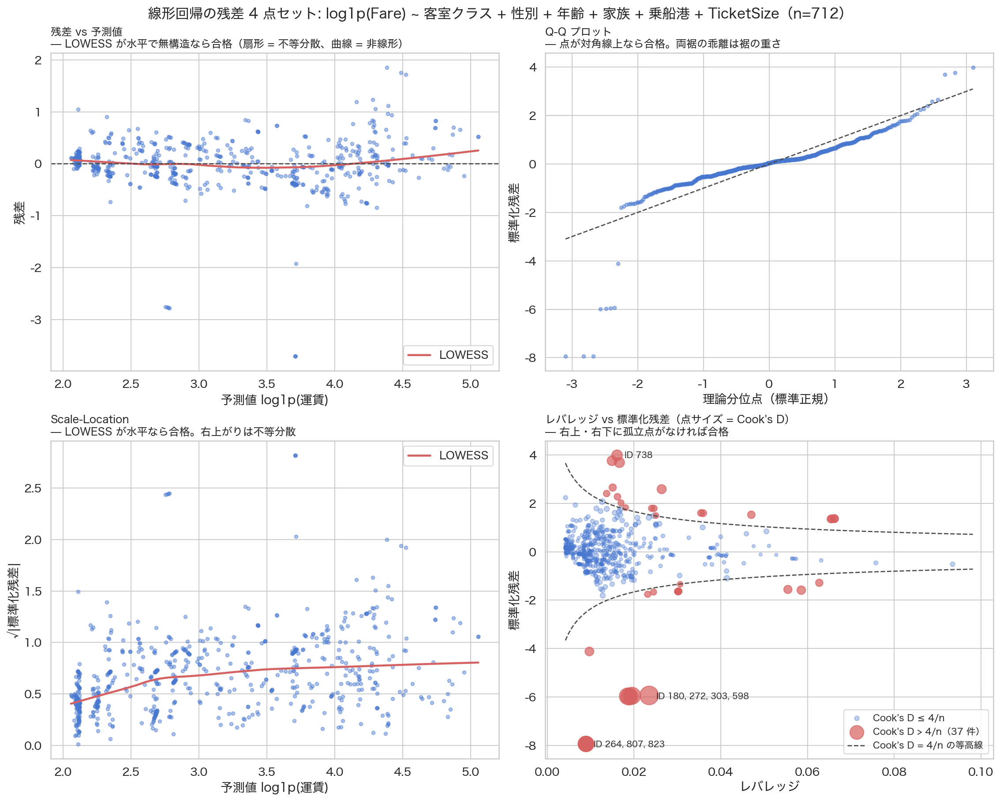
ols_residuals.png
残差 4 点セット。残差 vs 予測値（LOWESS 付き）、Q-Q、Scale-Location、レバレッジ vs 標準化残差（点サイズ = Cook's D、4/n に等高線）。
各パネルの小見出しに合格の読み方が入っています。Cook's D が 4/n を超えた 37 件は赤で、とくに外れた点には行 ID が付きます。
診断サマリーから
- 要対処Breusch-Pagan p = 9.6e-05（基準 > 0.05）HC3 ロバスト SE で再推定
- 確認Cook's D > 4/n が 37 件該当行の実データを見て判断
- 確認Shapiro-Wilk p = 1.0e-31n = 712 なので中心極限定理で緩和できる
- OKVIF 最大 2.28、Durbin-Watson 2.08
02
ロジスティック回帰・GLM
references/glm.md
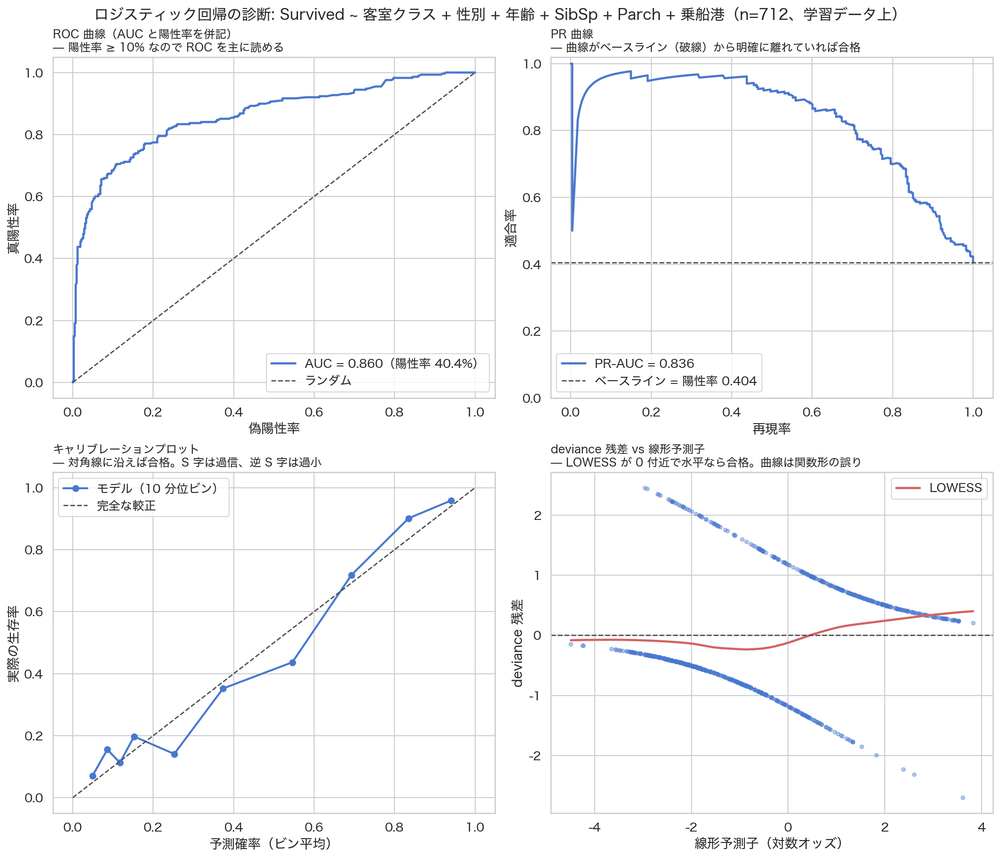
glm_logit_diagnostics.png
ROC（AUC に陽性率を併記）、PR（ベースライン = 陽性率の破線）、キャリブレーション（十分位ビン）、deviance 残差 vs 線形予測子。
二値では deviance 残差が 2 本の帯に割れます。現在の glm.md はこの用途に binned residual plot を求めており、この図はその改訂前の出力です。
診断サマリーから
- OKAUC 0.860（陽性率 40.4%、PR-AUC 0.836）
- OKBrier 0.141（ベースライン 0.241）、係数 |max| 2.64・SE max 0.56 で完全分離なし
- 確認キャリブレーションの最大乖離 0.111確率を使うなら学習外データで較正
- 確認閾値 0.5 で TN 364 / FP 60 / FN 81 / TP 207コストから閾値を選び直す
03
混合効果モデル
references/mixed-effects.md
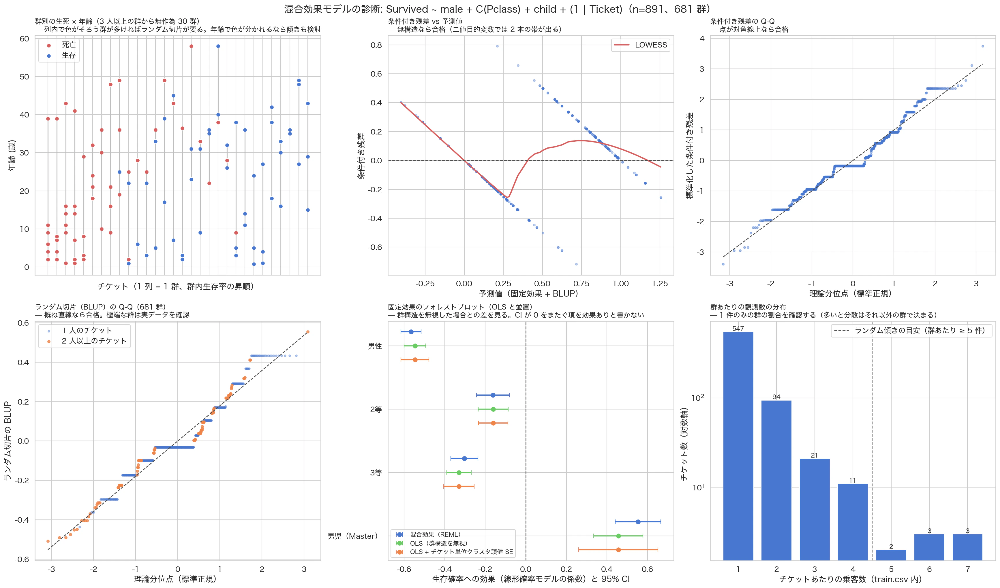
mixed_diagnostics.png
群別の生死 × 年齢（1 列 = 1 群）、条件付き残差、残差 Q-Q、ランダム効果（BLUP）の Q-Q、固定効果のフォレスト、群サイズ分布。
フォレストには単純 OLS とクラスタ頑健 SE の係数も並びます。
診断サマリーから
- 要対処二値の目的変数を線形混合効果で近似しているロジットの GLMM で再推定
- OKICC = 0.44（基準 > 0.05〜0.1）
- 確認群あたり中央値 1 人、1 人だけの群が 80.3%ランダム傾きは置かない
- OK収束 True・警告なし、ランダム効果分散 0.0635、群数 681
04
群間比較・仮説検定
references/hypothesis-test.md
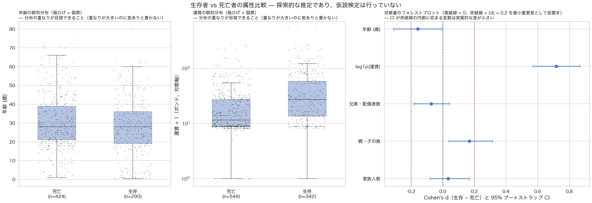
htest_group_comparison.png
年齢と運賃の群別分布（箱ひげ + 個票）と、効果量 Cohen's d のフォレスト。縦破線は仮置きの最小重要差 |d| = 0.2。
診断サマリーから
- OK差の点推定 + 95% CI: 年齢 −2.28 歳 [−4.47, −0.09]、log1p(運賃) +0.66 [0.53, 0.78]
- OK効果量 + CI: 最大は運賃 d = +0.72 [0.57, 0.87]。他は小さい効果の範囲
- OKp 値は出していない。等分散検定で手法を選ばず最初から Welch
- 確認最小重要差（MID）が未定義意思決定に使うならドメイン側で定義
05
生存時間分析（Kaplan-Meier・Cox）
references/survival.md
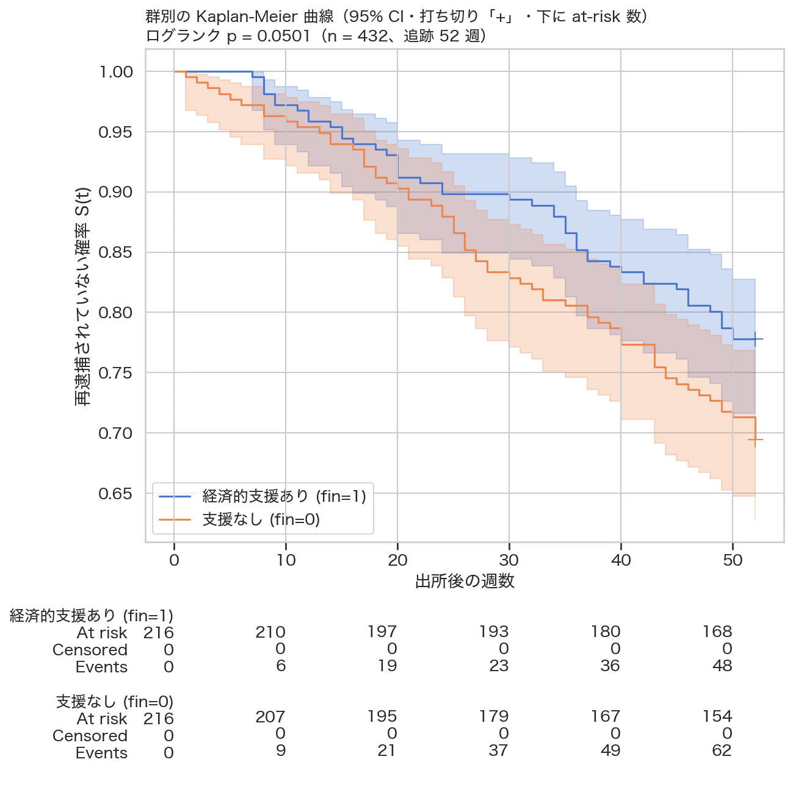
surv_km_by_fin.png
KM 曲線。95% CI・打ち切りマーク・at-risk テーブルがセットです。
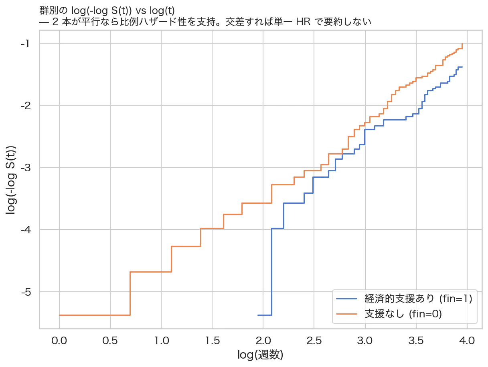
surv_loglog_by_fin.png
log(-log S(t)) vs log(t)。2 本が平行なら比例ハザード性を支持。ここでは交差なし。
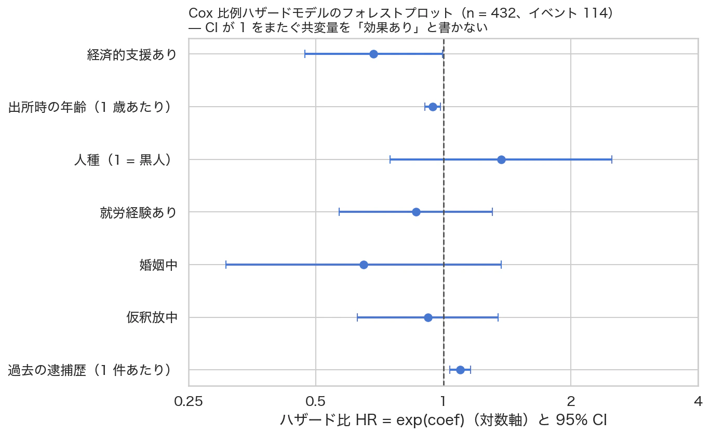
surv_cox_forest.png
HR と 95% CI のフォレスト。縦破線は HR = 1。
7 変数Schoenfeld 残差（共変量ごとに個別保存）
LOWESS が水平なら比例ハザード性を支持。age は右下がり、wexp は右上がり。
診断サマリーから
- 要対処Schoenfeld: age p = 0.0007、wexp p = 0.0068、全体 χ² = 17.95 (df 7, p = 0.012)この 2 変数を層別化して再当てはめ
- 確認ログランク p = 0.0501境界なので p で白黒つけず HR と CI で報告
- 確認HR(fin) = 0.684 [0.470, 0.996]、C-index 0.640（学習データ上）
- OK打ち切り 73.6%（全員が研究終了）、イベント数 / 共変量数 = 16.3
06
ベイズ推定・MCMC
references/bayesian-mcmc.md
収束が基準を満たすまで事後分布を報告しないスキルなので、対処順（非中心化 → 事前分布を絞る → adapt_delta を上げる）を
1 段ずつ実行した 4 段ぶんの図が残っています。
① 中心化R-hat 1.035 / ESS bulk 161 / 発散 213
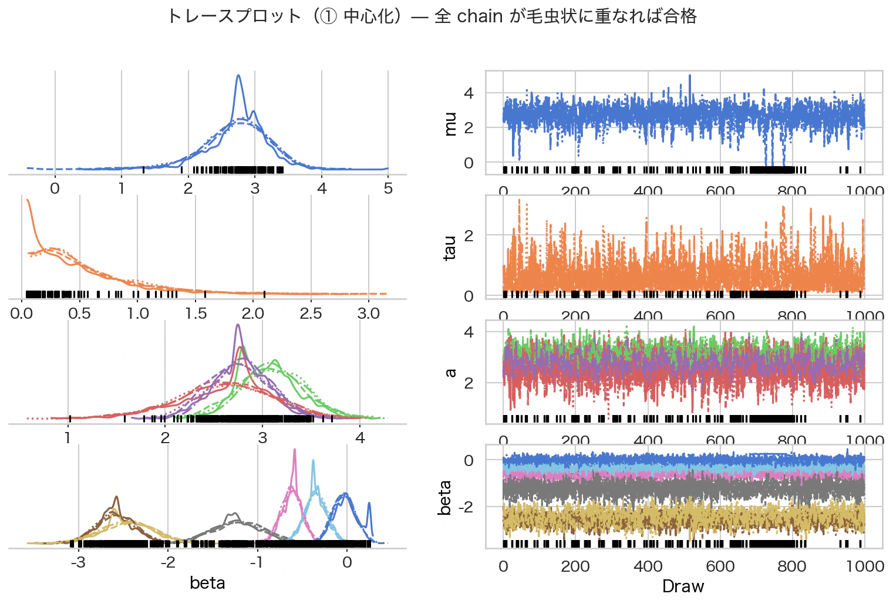
mcmc_1_centered_trace.pngトレース。全 chain が毛虫状に重なれば合格。
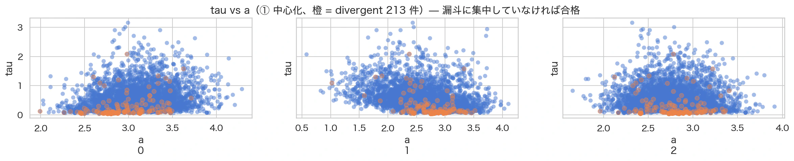
mcmc_1_centered_pair.pngペアプロット（橙 = 発散）。発散点が漏斗の底に集中しています。
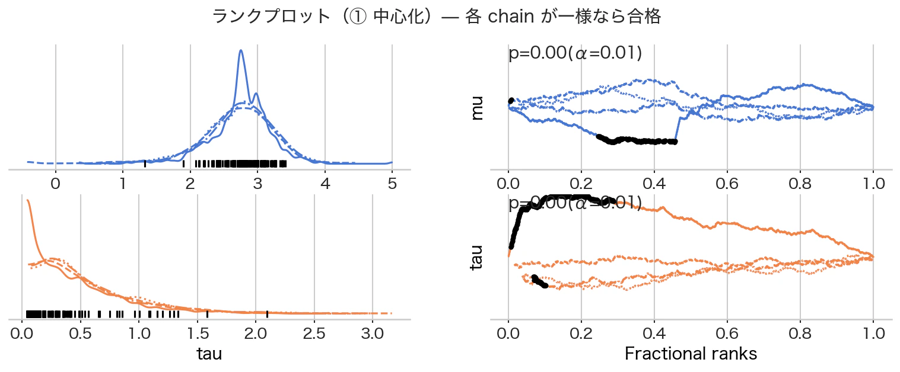
mcmc_1_centered_rank.pngランクプロット。一様なら合格。
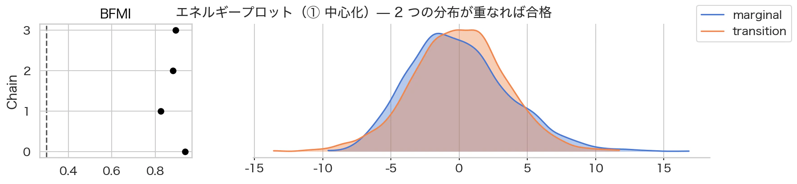
mcmc_1_centered_energy.pngエネルギー。2 分布が重なれば合格（BFMI 0.83）。
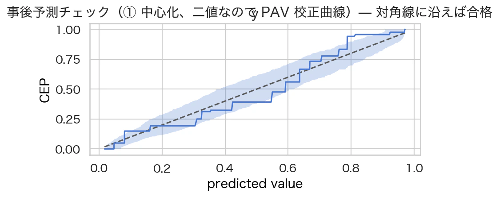
mcmc_1_centered_ppc.png事後予測。二値なので PAV 校正曲線を使っています。
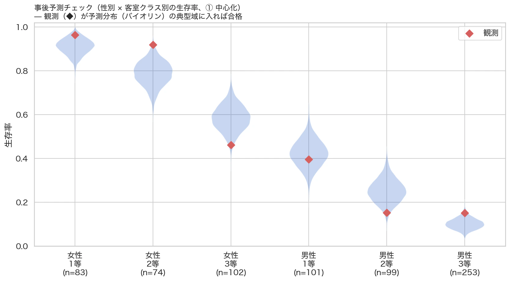
mcmc_1_centered_ppc_by_cell.pngセル別の事後予測。性別 × 客室クラスごとに観測値と 94% 予測区間を比べます。
② 非中心化R-hat 1.005 / ESS bulk 1,060 / 発散 9
③ 事前分布を絞るtau ~ half-N(0, 0.5) / 発散 1
④ adapt_delta 0.99R-hat 1.002 / ESS bulk 1,298 / 発散 0
診断サマリーから（④ / ① を併記）
- OKR-hat max 1.002 / 1.035、ESS bulk min 1,298 / 161、ESS tail min 1,267 / 95
- OK発散 0 / 213、BFMI 0.83、Pareto k max 0.24、
fit.diagnose() 警告なし
- 確認事後予測で女性 2 等・女性 3 等が 94% 区間外交互作用を入れて再推定
②
予測モデリング
predictive-modeling-diagnostics
分割と評価、木系モデル、モデル解釈。全 4 手法のうち 3 手法（time-series.md は Titanic に時系列がないため対象外）。
07
評価手続き・交差検証・リーク
references/ml-evaluation.md
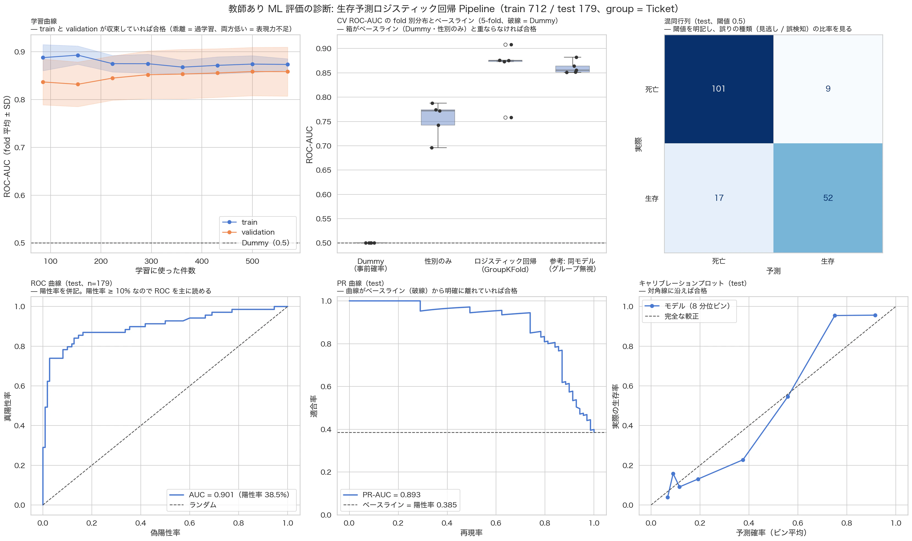
mleval_diagnostics.png
学習曲線、CV の fold 別スコア分布（Dummy と「性別のみ」のベースラインを同じ軸に並置）、混同行列、ROC、PR、キャリブレーション。
診断サマリーから
- OKCV ROC-AUC 0.858 ± 0.052 vs Dummy 0.500 / 性別のみ 0.754 ± 0.033
- OK前処理はすべて Pipeline 内。test 評価は 1 回だけ（AUC 0.901）
- OKグループ無視との差 +0.003。ただし fold 間 SD はグループ分割のほうが 4 倍大きい
- 確認キャリブレーション最大乖離 0.204（test 179 件）、閾値 0.5 固定
08
木系モデル（決定木・RF・GBDT）
references/tree-model.md
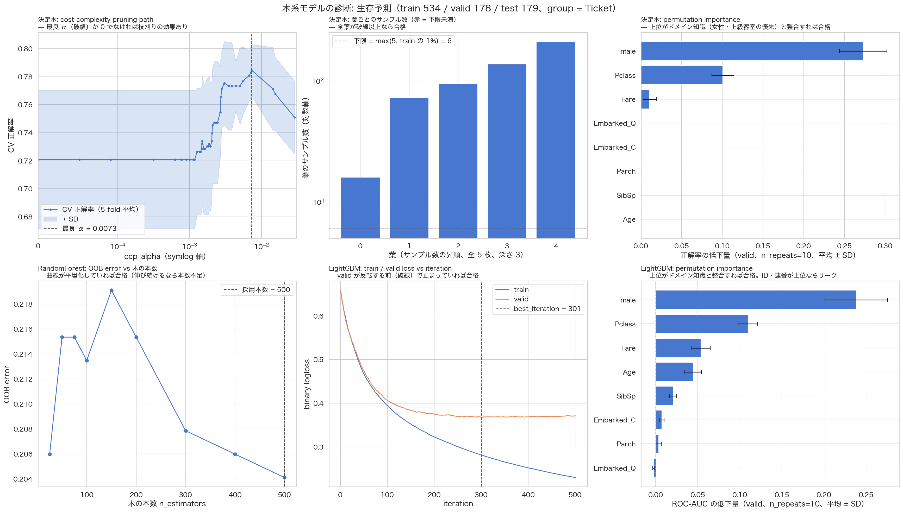
tree_diagnostics.png
cost-complexity pruning path（採用 α = 0.0073 に縦破線）、葉のサンプル数、permutation importance、
RF の OOB error vs 本数、GBDT の train / valid loss（best_iteration = 301 に縦破線）。
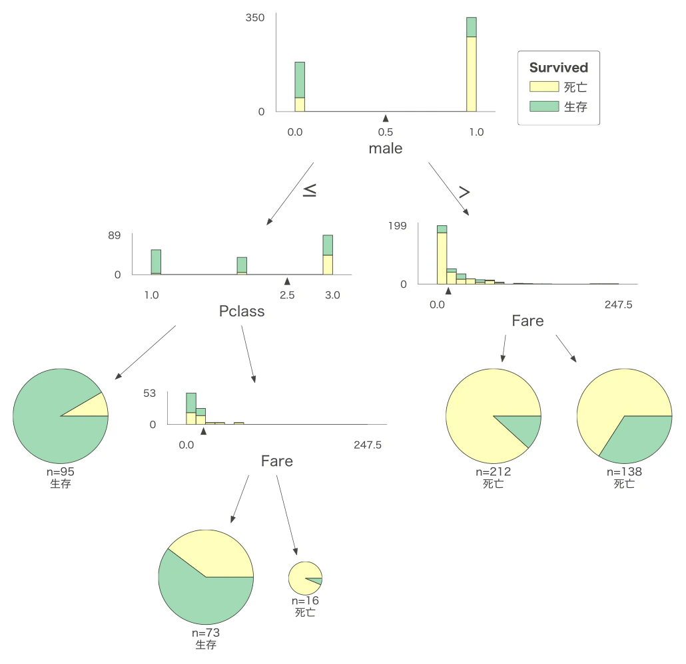
tree_dtreeviz_full.png
木の全体。深さ 4 以下なら全体を描き、各葉の n が読めることが条件です。
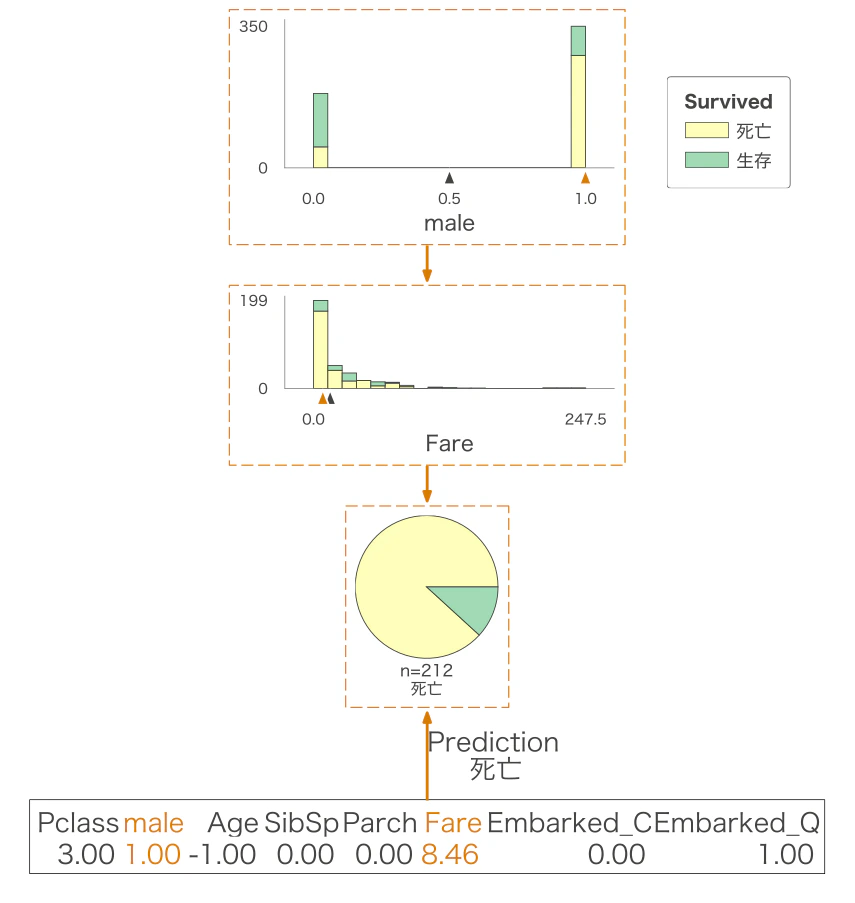
tree_dtreeviz_path.png
1 件の予測パス。分岐の Age ≤ -0.5 は「年齢不明」の意味です（欠測を −1 で符号化）。
診断サマリーから
- OK決定木 train / valid 0.794 / 0.826、最小葉 16 件
- OKRF train / OOB / valid 0.899 / 0.796 / 0.815、GBDT train / valid AUC 0.962 / 0.915
- OKpermutation importance 上位は male, Pclass, Fare。seed 5 本の SD 0.0008
- 確認OOB error の変動幅 0.011（200〜500 本）本数を 1,000 まで増やして確認
09
モデル解釈（SHAP・PDP / ICE）
references/model-interpretation.md
予測モデルの振る舞いの説明であり、因果効果ではありません。この 1 文を報告冒頭に書くこと自体が診断項目になっています。
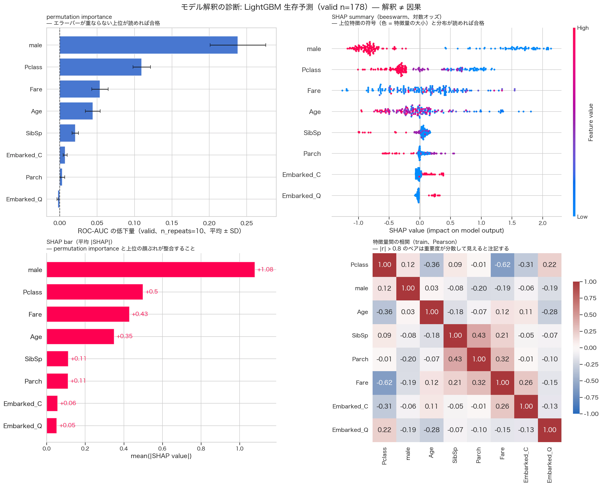
interp_importance_shap.png
permutation importance（棒 + エラーバー）、SHAP beeswarm、SHAP bar、特徴量間相関ヒートマップ。
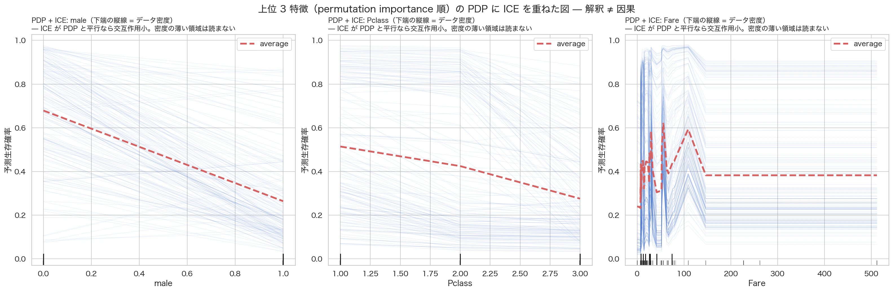
interp_pdp_ice.png
上位 3 特徴の PDP に ICE を重ね、x 軸にデータ密度の rug を描いたもの。SHAP は対数オッズ、PDP / ICE は予測確率です。
診断サマリーから
- OKSHAP 加法性の検算 max |差| = 1.1e-14（valid 全件）
- OK重要度順位の安定性 ρ 平均 0.78（5 fold）、手法間の順位一致 ρ = 0.98
- OK|r| > 0.8 のペアなし（最大 0.62、Pclass–Fare）
- 確認Fare > 100 は valid の 7.3%密度の薄い領域の PDP は読まない
③
因果推論
causal-inference-diagnostics
観察データの効果推定と準実験。全 3 手法のうち 2 手法（ab-test.md は Titanic にランダム割付がないため対象外）。
10
観察データの効果推定（傾向スコア・IPW）
references/causal-observational.md
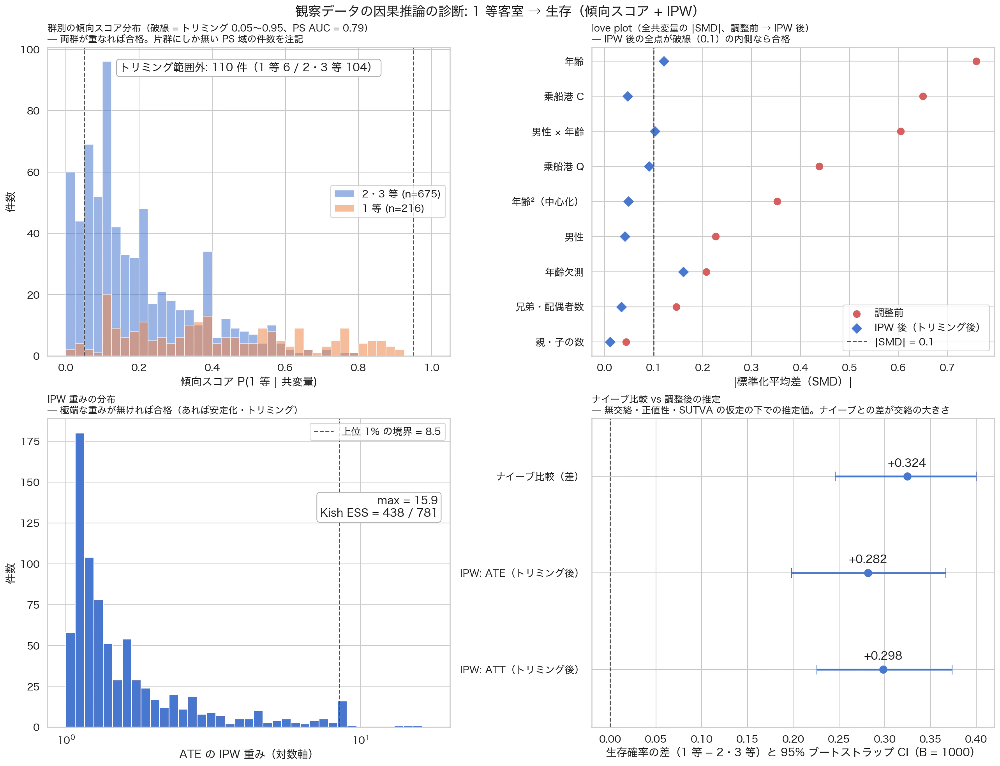
causal_obs_diagnostics.png
群別の傾向スコア分布（共通サポートの確認）、love plot（調整前後の SMD、|SMD| = 0.1 に縦破線）、IPW 重みの分布、
ナイーブ比較 vs 調整後推定。
診断サマリーから
- OKナイーブ +0.324 [+0.246, +0.400] / ATE +0.282 [+0.198, +0.367] / ATT +0.298 [+0.226, +0.374]
- OKPS モデル AUC 0.789、Kish 有効 n 438 / 781（56%）、トリミングで 110 件除外
- 確認|SMD| max 0.161（年齢欠測フラグ、基準 < 0.1）交互作用を足すか層別して再推定
- 確認E-value 3.33（参考: 性別と生存の RR は 3.93）、SUTVA が破れうる
11
準実験：回帰不連続デザイン（RDD）
references/causal-quasi-experimental.md
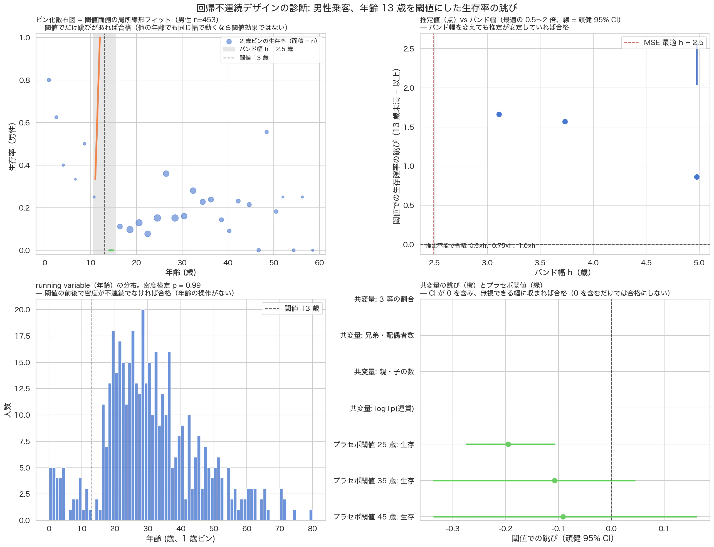
causal_qe_rdd_diagnostics.png
ビン化散布図と閾値両側の局所線形フィット、バンド幅感度（最適の 0.5〜2 倍）、running variable（年齢）の密度、共変量の跳びとプラセボ閾値。
診断サマリーから
- 要対処推定値 +1.67 [+1.47, +2.59]。生存確率の差なので範囲外効果は報告しない
- 要対処閾値近傍 n = 4 / 3（目安は両側 ≥ 20）、共変量の跳びが 0/4 変数で推定不能
- 要対処プラセボ閾値 25 歳で跳びあり（−0.195 [−0.275, −0.107]）
- OK密度検定 p = 0.99、局所線形（p = 1）+ MSE 最適バンド幅 + 三角カーネル
④
教師なし分析・EDA 前処理
unsupervised-eda-diagnostics
欠測と外れ値、クラスタリング、次元削減、異常検知。全 4 手法。
12
欠測・外れ値・EDA 前処理
references/missing-data.md
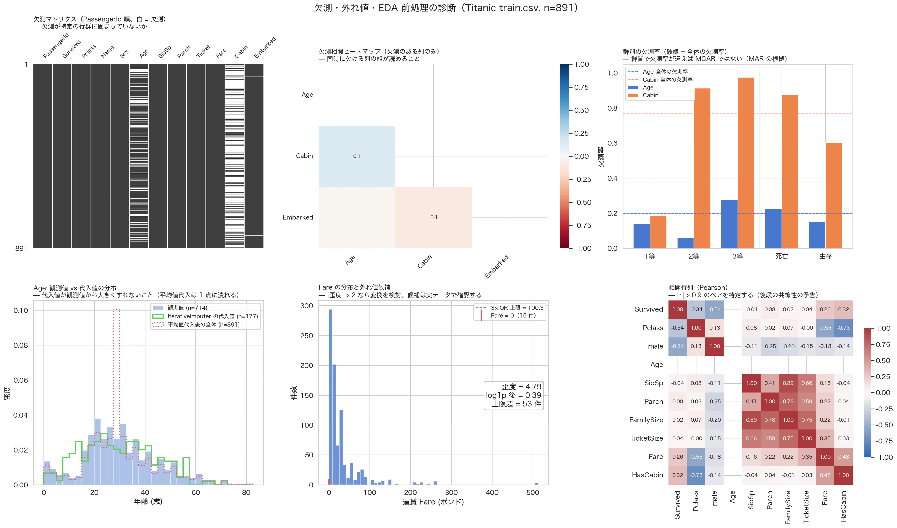
missing_diagnostics.png
欠測マトリクス、欠測相関ヒートマップ、群別の欠測率、観測値 vs 代入値の分布比較（平均値代入も併置）、
運賃の分布（外れ値候補に印）、相関行列。
診断サマリーから
- 要対処Cabin 欠測 77.1%値を使わず HasCabin フラグに置き換え
- 要対処リストワイズ削除で 177 / 891（19.9%）を失う、Fare の歪度 4.79MICE を併記、log1p(Fare) を使う
- 確認Fare > 100.3 が 53 件、Fare = 0 が 15 件実データを見て別母集団かを判断
- 確認Age 欠測率は 1 等 13.9% / 3 等 27.7%。客室クラス依存の MAR と見立て
13
クラスタリング（k-means・Ward）
references/clustering.md
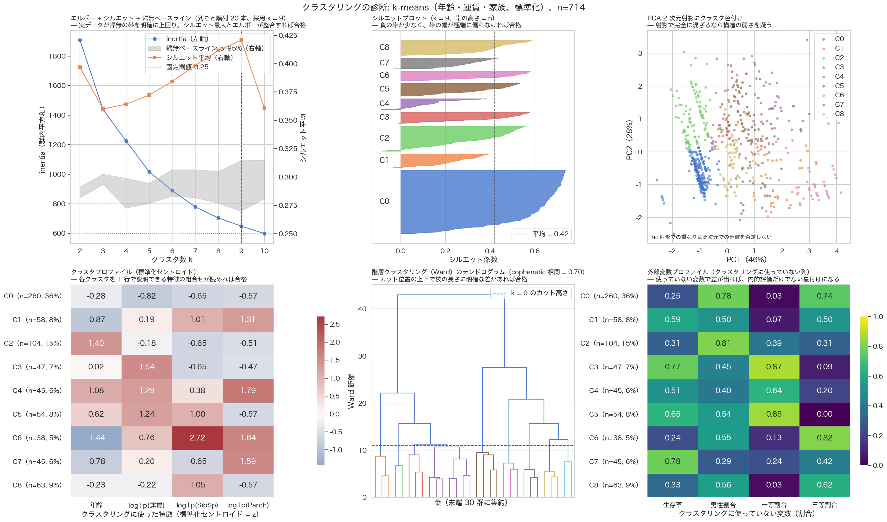
cluster_diagnostics.png
エルボー + シルエット + 帰無ベースライン（列ごと順列 20 本の 5〜95% を灰色の帯で重ねたもの）、シルエットプロット、
PCA 2 次元射影、標準化セントロイド、デンドログラム、クラスタリングに使っていない変数でのプロファイル。
診断サマリーから
- OKシルエット平均 0.42（k = 9）に対し帰無 95% = 0.31
- OK安定性 ARI: seed 5 本 0.96 / 80% サブサンプル 0.93 / Ward との一致 0.80
- OK各クラスタの n は 5.3%〜36%、cophenetic 相関 0.70、n_init = 20
- 確認帰無との差が k によらずほぼ一定（0.106〜0.107）GMM の BIC でも比較し、運用可能な数から人が決める
14
次元削減（PCA・因子分析・t-SNE）
references/dimensionality-reduction.md
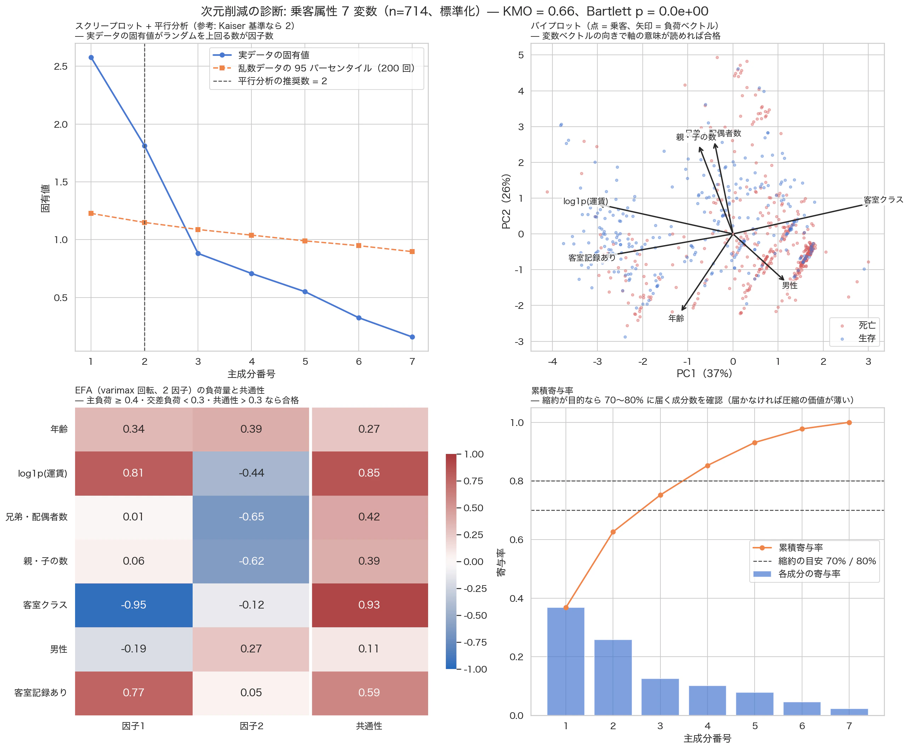
dimred_pca_efa.png
スクリープロット + 平行分析（推奨因子数 2 に縦破線）、バイプロット、回転後負荷量のヒートマップと共通性、累積寄与率。
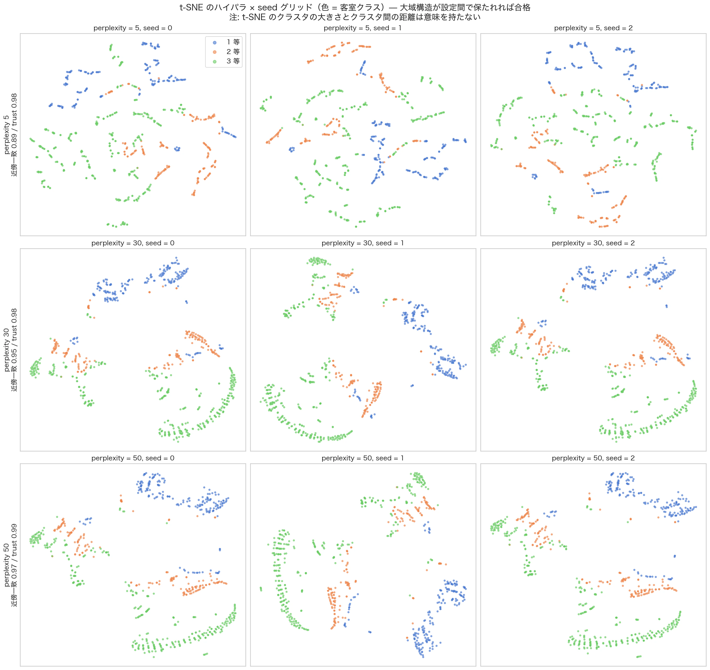
dimred_tsne_grid.png
perplexity 5 / 30 / 50 × seed 3 本のグリッド。各パネルに trustworthiness を併記し、
「クラスタの大きさと距離は意味を持たない」と注記しています。
診断サマリーから
- 要対処共通性の最小が 男性 0.11、年齢 0.27（基準 > 0.3）因子の解釈から外すか変数を入れ替える
- OKKMO 0.66、Bartlett p < 1e-300、因子数は平行分析で 2
- OKt-SNE の近傍一致 Jaccard 0.89〜0.97、trustworthiness 0.98〜0.99
- 確認累積寄与率は PC2 まで 62.6%、二値・順序変数を Pearson 相関で扱っている
15
異常検知（IsolationForest）
references/anomaly-detection.md
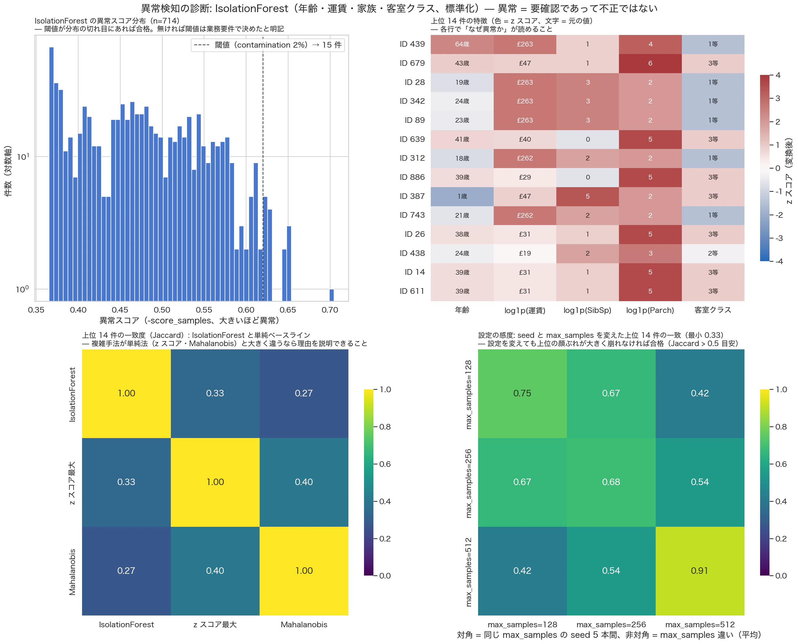
anomaly_diagnostics.png
異常スコアのヒスト（閾値に縦破線）、上位 14 件の特徴量 z スコア（各行が「なぜ異常か」）、
単純ベースラインとの上位集合 Jaccard、contamination を 0.5〜5% と変えた感度分析。
診断サマリーから
- OK上位 14 件すべてに各特徴の z スコアを付与。Survived は異常ラベルとして使っていない
- 確認IF vs LOF の上位集合 Jaccard = 0.00（IF の seed 間は平均 0.68）複数手法で共通する行だけを要確認に
- 確認スコア分布に明確な切れ目がない「件数で決めた」と明記
- 確認単純ベースラインとの Jaccard は z スコア 0.33 / Mahalanobis 0.27。ラベルがなく勝敗は判定できない
⑤
シミュレーション・数理最適化
simulation-optimization-diagnostics
モンテカルロと MIP。全 2 手法。
16
モンテカルロシミュレーション
references/simulation.md
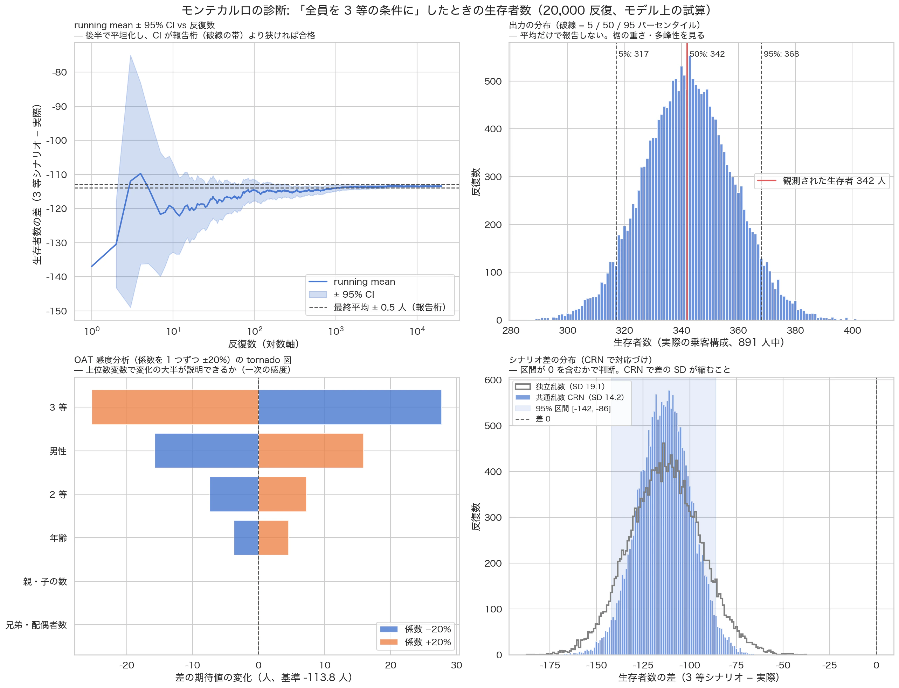
sim_diagnostics.png
running mean ± 95% CI vs 反復数、出力の分布（5 / 50 / 95 パーセンタイルに縦破線）、OAT 感度分析の tornado、
共通乱数で対応づけたシナリオ差の分布。
診断サマリーから
- OKMCSE 0.100 / CI 半幅 0.196（人数で報告するので基準は < 0.5）
- OK解析解と一致（平均 342.1 vs Σp 342.0、分散比 0.985）、保存則の誤差 5.7e-14
- OK共通乱数で差の SD が 19.1 → 14.2。裾リスク P(差 ≤ −100 人) = 84.0%（MCSE 0.3pt、95% 半幅 0.5pt）
- 確認モデル上の what-if であり因果効果ではない。入力分布は MLE の漸近正規
17
数理最適化（MIP）
references/optimization.md
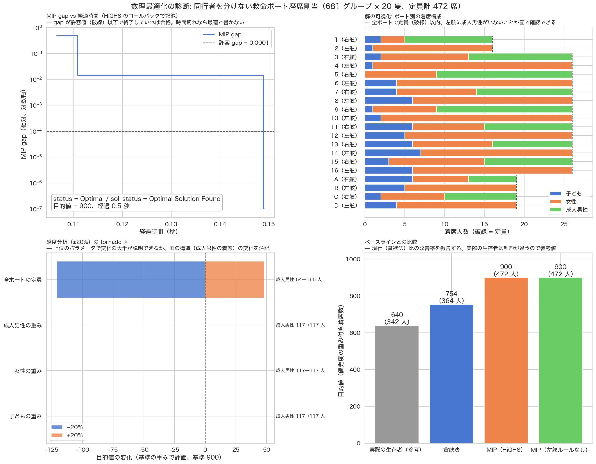
opt_diagnostics.png
MIP gap vs 経過時間、解の可視化（ボート別の着席構成で定員と左舷ルールを確認）、パラメータ ±20% の tornado、
貪欲法ベースラインとの目的値比較。
診断サマリーから
- OKstatus = Optimal（timeLimit 60 秒 / gapRel 1e-4 / seed 固定で 0.48 秒、最終 gap 0.0）。時間切れではない
- OK解を代入して独立に再検証した制約違反の最大値 3.3e-16、目的値の再計算差 0.0
- OKMIP 900 vs 貪欲法 754（+19.4%）、変数 8,590 / 制約 701、LP 双対値は全隻 1.00
- 確認重み（子ども 3 : 女性 2 : 成人男性 1）は仮定。定員 ±20% で解の構造が変わる